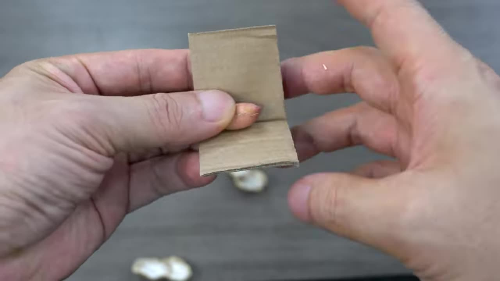
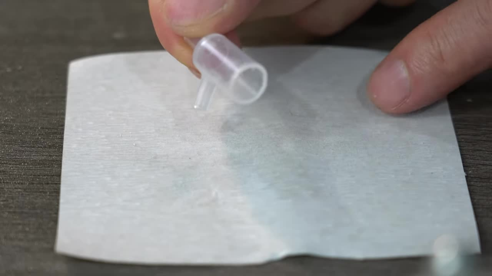

Simple Spray Fan
Project Overview: Coolness By Your Side
告别炎热！本教程教您利用简单的材料，制作一个可以在水瓶上使用的简易喷雾小风扇。它体积小巧，制作成本低，能有效结合喷雾降温和风扇送风，随时随地为您带来清凉。
Design
设计简单
Cooling
喷雾降温
and Effective
便携有效
Materials List
Step-by-Step Instructions
从纽扣电池包装的塑料片上剪下一小块。用卡尺测量并确定尺寸，这里是 8.8mm。在中心钻一个小孔。 Cut a small piece from the plastic sheet of button cell packaging. Use calipers to measure and determine the size, which is 8.8mm here. Drill a small hole in the center.
取一小块纸板，对折后在中间挖个槽。把花生仁放入槽中。 Take a small piece of cardboard, fold it in half, and cut a groove in the middle. Place peanut kernels in the groove.
将剪好的塑料片放在花生仁上，然后用老虎钳夹紧。花生仁的形状会把塑料片压制成带有弧度的叶片。 Place the cut plastic piece over the peanuts, then clamp it tightly with the bench vise. The shape of the peanuts will press the plastic piece into curved blades.
取出压制好的塑料片。用美工刀小心地沿着压出的痕迹切割，形成四个独立的叶片。 Take out the pressed plastic piece. Carefully cut along the pressed lines with a utility knife to form four separate blades.
在微型电机 (#408 Motor) 的轴上滴一小滴 704 硅橡胶 (或其他胶水)。将修整好的塑料叶片（带有中心孔）固定到电机轴上，等待胶水凝固。 Put a small drop of 704 Silastic (or other adhesive) on the shaft of the miniature motor (#408 Motor). Attach the trimmed plastic blade (with the center hole) to the motor shaft and wait for the adhesive to set.
取 2.5ml 注射器的活塞杆。用美工刀和钢锯将其切割成图示形状的喷雾头底部，包括一个中心孔和一个侧面喷雾口。 Take the plunger rod of the 2.5ml syringe. Use a utility knife and hacksaw to cut it into the shape of the spray head bottom as shown, including a central hole and a side spray outlet.
取 2.5ml 注射器的主体部分。用美工刀和钢锯将其切割成图示形状的喷雾头顶部，包括一个用于连接水管的侧口。 Take the main body of the 2.5ml syringe. Use a utility knife and hacksaw to cut it into the shape of the spray head top as shown, including a side port for connecting the water tube.
将微型电机固定在喷雾头底部组件的中心孔上方，确保电机轴可以通过该孔。使用胶水固定。然后将喷雾头顶部组件固定在电机上方，确保侧面喷雾口与叶片旋转平面垂直。 Fix the miniature motor above the central hole of the spray head bottom component, ensuring the motor shaft can pass through the hole. Use adhesive to secure it. Then fix the spray head top component above the motor, ensuring the side spray outlet is perpendicular to the fan blade's rotation plane.
在喷雾头顶部的侧口连接一段软管。将软管的另一端插入装满水的塑料水瓶中。将微型电机的导线连接到电池或电池盒上。视频中使用了纽扣电池连接导线。 Connect a soft tube to the side port of the spray head top. Insert the other end of the tube into a plastic water bottle filled with water. Connect the miniature motor's wires to a battery or battery holder. The video shows connecting wires to a button cell battery.
也可以使用电池盒连接，提供更稳定的电力。 A battery holder can also be used for a more stable power source.
How it Works: Simple and Effective
当电机转动时，风扇叶片快速旋转。同时，由于喷雾头的设计和水管插入水瓶中，风扇产生的气流会在水管上方形成负压，将水从水瓶中吸上来。水被吸到喷雾口后，被高速旋转的叶片打散成细小的水雾。风扇继续将这些水雾吹向前方，通过水分蒸发带走热量，从而达到降温效果。 When the motor rotates, the fan blades spin rapidly. At the same time, due to the design of the spray head and the water tube inserted into the bottle, the airflow generated by the fan creates a negative pressure above the tube, drawing water up from the bottle. As water is drawn to the spray outlet, it is dispersed into fine mist by the high-speed rotating blades. The fan continues to blow this mist forward, and the evaporation of the water removes heat, achieving a cooling effect.
Testing and Results: Instant Cooling Experience
将制作好的喷雾小风扇固定在装有水的塑料水瓶口，连接电源。可以看到细密的水雾伴随风被吹出，带来清凉感。 Attach the completed spray fan to the opening of a plastic water bottle filled with water and connect the power. You can see fine mist being blown out with the air, providing a cooling sensation.
在炎热的天气下，这种喷雾结合送风的方式可以有效地降低体感温度，是户外或没有空调环境下的实用小工具。 In hot weather, this combination of mist and airflow can effectively lower the perceived temperature, making it a practical gadget for outdoors or environments without air conditioning.
Get Your Hands Dirty and Enjoy the Coolness!
制作这个简易喷雾小风扇非常简单，材料也容易获取。快来试试看，在这个夏天给自己和家人朋友带来一份随身的清凉吧！ Building this simple spray fan is very easy, and the materials are readily available. Give it a try and bring some portable coolness to yourself, family, and friends this summer!
在制作过程中遇到问题？或者有任何改进建议？欢迎在评论区留言！ Encountering problems during the process? Or have any improvement suggestions? Leave a comment below!
© 2024 DIY Tutorials. All rights reserved.